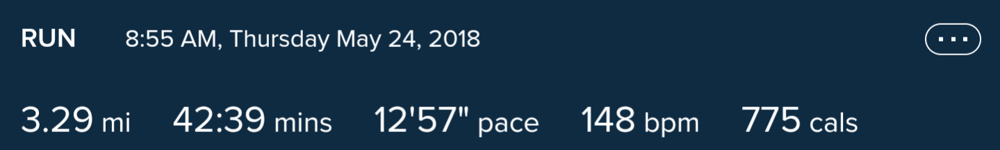
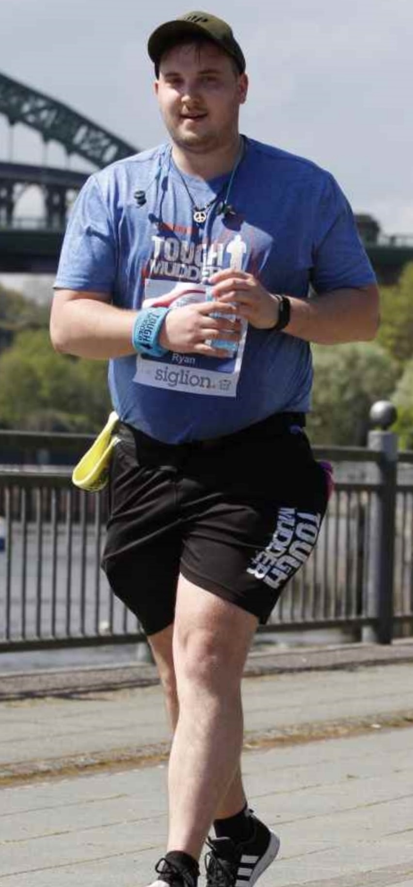
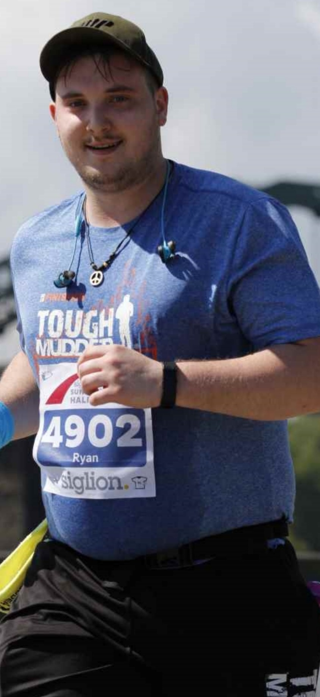
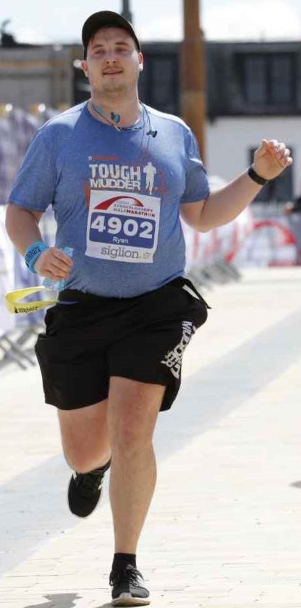
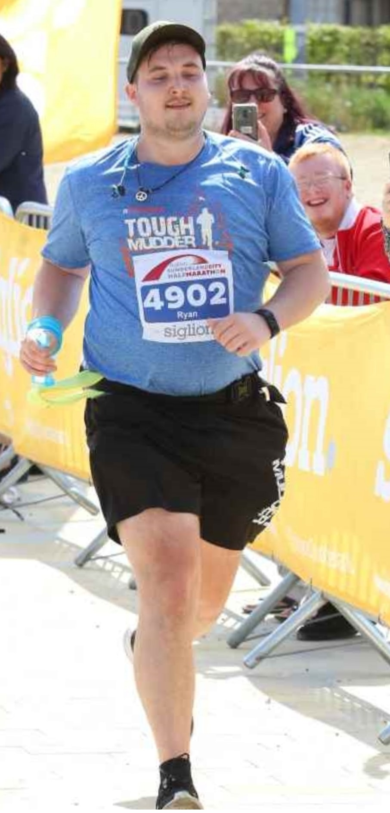

About Me
Hey!
My names Ryan and I am a Business Analyst trying to learn HTML.
I have decided to create this website as a project to test my HTML knowledge and hopefully help you get into shape!
My weight loss journey
I used to be 19 stone, lifting the same weights over and over week on week and getting zero progress.


I had been lifting weights for around 4 years but my body composition stayed the same and i lost zero weight. I decided enough was enough!
I had wanted to start running for a while and instead of being sensible i went for my usual approach... all in or nothing! I signed up for a local half marathon and set myself on a mission to go from 0 miles to 13.1 within 6 months.
So I started running
With six months to go and zero running experience... I laced up my trainers, charged up my earphones and started the Couch to 5k . Within 9 weeks i recorded my first 5k with a time of 42 minutes and 39 seconds.
My first Half Marathon
I completed the Couch to 5k and kept up with the regular running, increasing my distance through a weekly long run and before i knew it... Race Day was here!
   It took me 2 hours and 53 minutes, but i had done it... my first Half Marathon was complete, and i had caught the bug!
I signed up for the Great North Run and set my sights on getting faster.
I didnt structure my running at all. I had a goal but no plan of how to get there, i just ran 3-4 times per week and enjoyed every second of it!
I had lost weight...
Not much, but I had lost enough for it to be noticable.
I had signed up for a number of 10ks and the Great North Run every year since 2018 and decided to make a comparison photo...
I began to look like i actually enjoyed it!
I began to train properly, including Speed workouts and Hill sprints (more of this on my Running page). I managed to get my times down and i am not going to stop there.
My current Personal Bests are:
| 5k | 10k | Half Marathon |
| 24:44 | 51:03 | 2:04:40 |
2024 will be the year that i break the 50 minute 10k and the 2 hour Half Marathon... I'll make sure of it!
hs